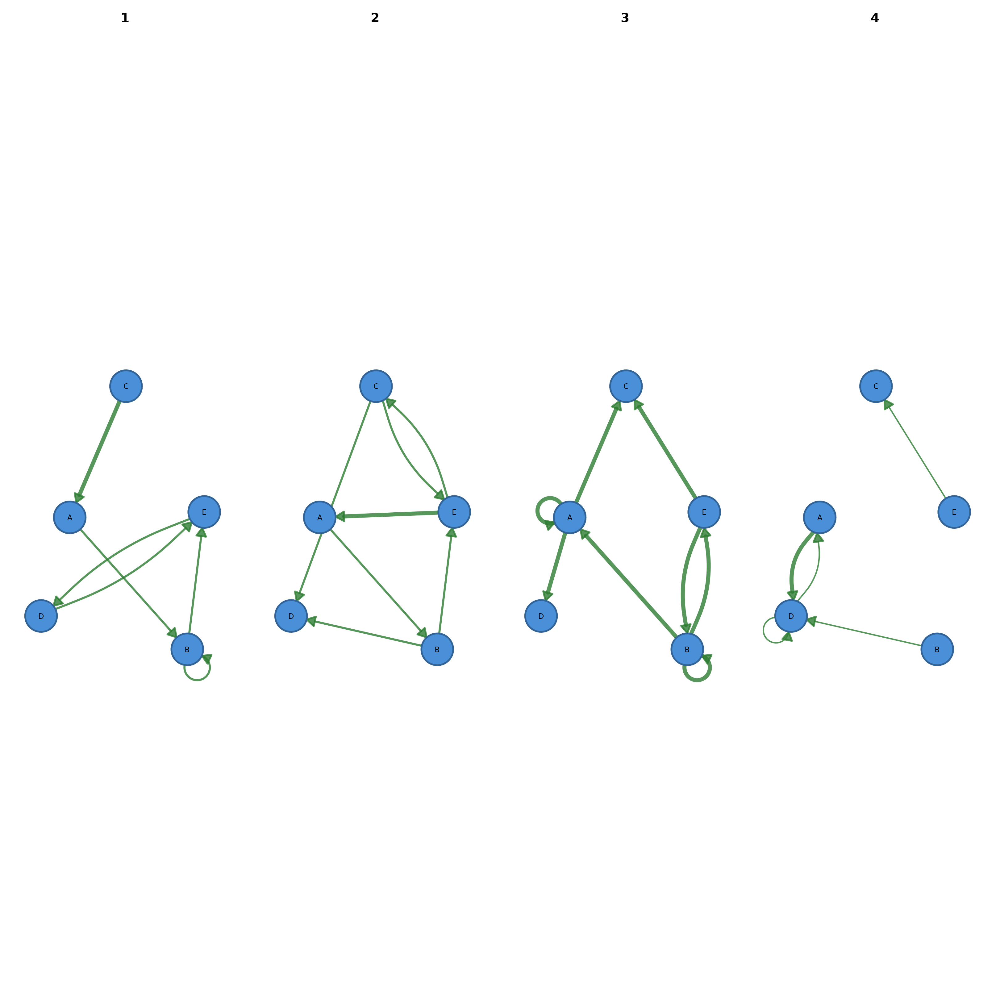

Plots a network at different time points side by side. The input is an
edge list data frame with a time column, a cograph_network whose
stored edge data contain such a column, or a list of networks. All panels
share one node layout. At least two periods are required.
Usage
plot_network_evolution(
x,
time = NULL,
slices = NULL,
cumulative = FALSE,
labels = NULL,
layout = "spring",
ncol = NULL,
node_size = 5,
seed = 42,
combined = TRUE,
...
)Arguments
- x
An edge list data frame with columns
from,to, optionallyweight, and a time column; acograph_networkwith stored edge data; or a list of network objects (matrices, igraph, etc.).- time
Character. Name of the time column in
x. Required for data frame input and ignored ifxis a list.- slices
Integer or NULL. Number of equal-width bins of the numeric time column. Default NULL uses the unique time values.
- cumulative
Logical. If TRUE, each panel shows all edges up to that time point (growing network). If FALSE (default), each panel shows only edges from that period.
- labels
Character vector of panel labels, one per period. The default NULL uses the time values, or
"T1","T2", ... for list input.- layout
Character. Any character value computes one Fruchterman-Reingold layout from the union of all edges and uses it for every panel. Default
"spring".- ncol
Integer. Number of grid columns. The default NULL uses
min(number of periods, 4).- node_size
Numeric. Node size passed to
splot. Default 5.- seed
Integer or NULL. Random seed for the shared layout. The caller's random number state is restored on exit. NULL sets no seed. Default 42.
- combined
Logical. When TRUE (default), the period panels are arranged in an internal grid via
graphics::par(mfrow = ...). When FALSE, the panels are plotted into a layout the caller has already configured, for example withpanel_layout().- ...
Additional arguments passed to
splot.
Value
Invisibly, a list with one element per period. For data frame
input each element is the edge-list data frame of that period (all
earlier periods included when cumulative = TRUE). For list input
it is the input list.
Examples
set.seed(1)
edges <- data.frame(
from = sample(LETTERS[1:5], 30, replace = TRUE),
to = sample(LETTERS[1:5], 30, replace = TRUE),
week = sample(1:4, 30, replace = TRUE))
cograph::plot_network_evolution(edges, time = "week")
